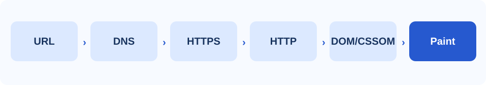

Network stack
Manages DNS, connections, HTTP, and caching.
SECTION 02 • TECHNOLOGY
A browser coordinates networking, HTML, CSS, JavaScript, and security to turn a URL into a usable page.

Manages DNS, connections, HTTP, and caching.
Processes HTML and CSS to calculate what appears on screen.
Executes code that makes pages respond to user actions.
Handles cookies, caches, and other local website data.
Use sandboxing, process isolation, and permissions to reduce risk.
Help inspect HTML, test CSS, debug scripts, and measure performance.
Browsers process untrusted content, so sandboxing and site isolation help prevent a compromised page from affecting the rest of the system. Certificate checks and safe-browsing warnings also help reduce threats.
Privacy features may restrict tracking and third-party storage. Private browsing reduces locally saved history but does not make someone anonymous online.